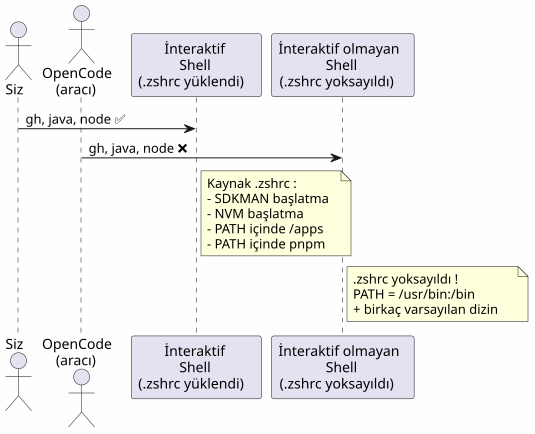
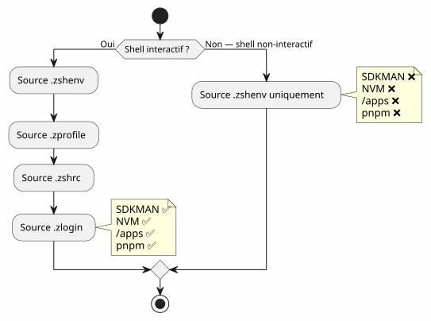
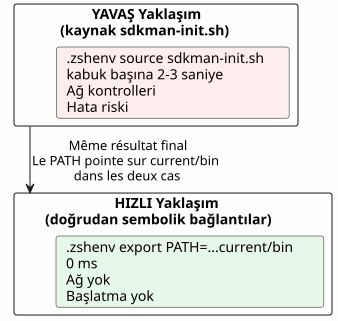
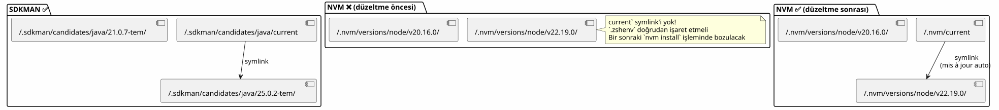
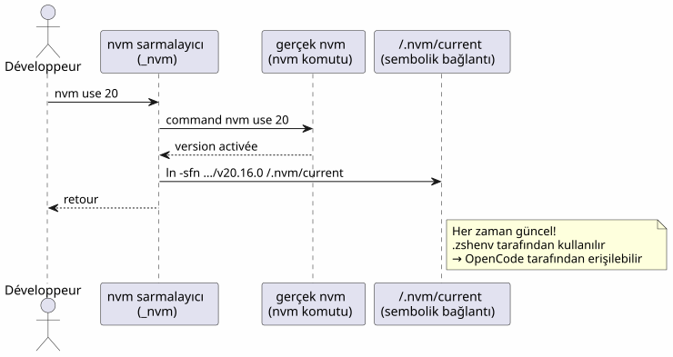
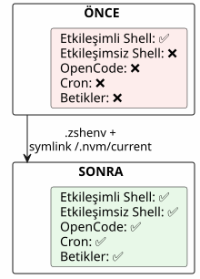

OpenCode ve eksik PATH: araçlarınız neden agent shell'inde yer almıyordu
Yayınlandı: 21 April 2026
OpenCode’u terminalinizde başlatıyorsunuz, her şey çalışıyor. Agent bir`gh`— bulunamadı. Bir`java -version`— eksik. Bir`node`— hiçbir yerde. Yine de bu araçlar sizin shell’inizde mevcut. Sorun mu? OpenCode shell’ler başlatıyoretkileşimsizhiç okumayanlar sizin`.zshrc`İşte bunu düzgün bir şekilde teşhis etme ve düzeltme yolu.
- içindekiler
-
[]
Sahne: araçlar dünyasında kör bir ajan
Bir salı akşamıydı. Yeni kurmuştumhttps://opencode.ai[OpenCode], kodlama yöntemimi dönüştürmeyi vaat eden yapay zeka ajanı. İlk test: ondan GitHub depolarımı listelemesini istemek.
$ opencode
> Utilise gh pour lister mes repos
❌ bash: gh: command not foundTuhaf.`gh`terminalimde mükemmel çalışıyordu. Başka bir şey deniyorum:
> Vérifie la version de Java
❌ bash: java: command not foundSonra :
> Lance le build Gradle
❌ bash: gradle: command not foundJava, Gradle, Node,gh— ajan için her şey görünmezdi. Benim terminalim ise her şeyi görüyordu. Sanki ajan ve ben iki paralel dünyada yaşıyormuşuz gibi.
Anlamak için saatler harcadım. Saatlerce…echo $PATH, de which java, artan bir hayal kırıklığıyla. Sonunda problemin araçlar olmadığını anladım — problem şuydu:kabuk. OpenCode, alt süreçler başlatan tüm ajanlar gibi, shell’ler içerisinde çalışıretkileşimsiz. Ve bu kabuklarda Zsh, doğrudan doğruya sizin`.zshrc`Lütfen çevrilecek metni sağlayın.
Aşağıdakiler, bu teşhisin, çözümün ve çıkardığım dersin tam hikayesidir. Eğer bir yapay zeka ajanı — OpenCode, Aider, Cursor veya hatta cron betikleri — kullanıyorsanız, bu sorun bir gün sizinle de karşı karşıya kalacaktır.
Hatanın anatomisi: iki shell, iki dünya
Bir terminal açtığınızda, Zsh onu bir shell olarak işleretkileşimli. Yüklüyor`.zshrc`, her şeyi başlatan: SDKMAN, NVM, pnpm, takma adlar ve şık isteminiz. Ortamınız eksiksizdir.
Ancak OpenCode bir komut çalıştırdığında, etkileşimli bir terminal başlatmaz. Bir shell başlatıretkileşimsiz— ekran arkasında insan olmayan bir görev kabuğu. Ve Zsh, bu bağlamda, atlar`.zshrc`. Sadece … okuyor`.zshenv`Lütfen çevrilmesini istediğiniz metni sağlayın.
Bu ayrım neden mevcut? Çünkü etkileşimli olmayan bir shell, insan bir kullanıcıye hizmet etmek için değil, scriptleri çalıştırmak için tasarlanmıştır. Arka planda çalışan bir script’e takma adları (aliases), istemi (prompt) ve tamamlama özelliklerini yüklemek israf olurdu. Sorun şu ki, yürütülebilir dosyaları bulmak için en kritik bilgi olan PATH değişkeniniz genellikle şurada başlatılır:`.zshrc`, değil`.zshenv`Lütfen çevrilecek metni sağlayın.

Sorunun kökeni:Zsh, .zshrc dosyasını yalnızca etkileşimli kabuklar için yükler. OpenCode, alt süreçler başlatan tüm yapay zeka ajanları gibi, etkileşimsiz kabuklar (non-interactive shells) kullanır. Bu kabuklar yalnızca`.zshenv`Lütfen çevrilecek metni sağlayın.
Suçlular: .zshrc vs .zshenv
Zsh şunlara sahiptir:dört başlatma dosyası, her biri belirli bir role sahip. Bu zarif bir tasarım — ancak sorunun düğümlendiği nokta da burası:
Dosya |
Kaynaklandığında |
Rol |
PATH’ı değiştir? |
|
Her zaman(etkileşimli + etkileşimsiz + giriş) |
Temel ortam değişkenleri, PATH |
✅ Evet — burası ONUN yeri |
|
Yalnızca giriş kabukları |
Yavaş komutlar (oturum başına bir kez) |
Mümkün |
|
Yalnızca etkileşimli kabuklar |
Takma ad, istem, tamamlama, etkileşimli araçlar |
❌ Kritik değişkenler için değil |
|
Giriş kabukları (.zshrc sonrası) |
Hoş geldiniz mesajları, tamamlama |
Nadiren |
Tablo bir ipucu veriyor, ancak onu derinlemesine anlamak gerekir. Bunu bir evin odaları gibi düşünün:
-
.zshenv`dirgiriş holü— herkes buradan geçer, ziyaretçi veya sakin. Buraya bir şey koyarsanız, tüm `shellbunu görebilir. -
`.zshrc`dir kisalon— buraya yalnızca sakinler (etkileşimli shell’ler) girer. Ziyaretçiler (etkileşimsiz shell’ler) ise holde kalır.
-
.zprofileet `.zlogin`giriş kabukları (SSH ile bağlandığınızda olduğu gibi) için özelleşmiş parçalardır.
Trajedi şu ki, çoğumuz PATH’i oturma odasına koyuyoruz. Ve yapay zeka ajanı ise oraya girmeye asla hak sahibi değil.
Problem bir diyagramla:

Bir terminal açtığınızda, Zsh etkileşimlidir: şunları okur`.zshrc`, her şey çalışıyor. OpenCode bir komutu yürütmek için bir shell başlattığında, Zsh etkileşimli değildir: atlar`.zshrc`, sadece … okur`.zshenv`. Et si `.zshenv`yok veya PATH içeriğini barındırmıyor — burası bir çöl.
|
Zsh bunu neden yapıyor?Bu, Unix’ten miras kalan bir tasarım seçimidir. Etkileşimli olmayan bir shell şunlar olmalıdır:hızlı et tekrar üretilebilirSDKMAN’in takma adlarını (alias), renkli istemlerini (prompt) ve ağır başlatma işlemlerini bir cron betiğine veya bir yapay zeka ajanına yüklemek yavaş ve kırılgan olurdu. Bu nedenle ayrım mantıklıdır:`.zshenv`temel olarak (değişkenler, PATH),`.zshrc`konfor için (aliaslar, istemler, tamamlamalar). Sorun, esas olanı konforun içine koyduğumuzda ortaya çıkar. |
Adım adım tanı
Düzeltmeden önce, tam olarak neyin eksik olduğunu anlamak gerekir. İşte tekrarlanabilir bir teşhis yöntemi — yapay zeka ajanlarıyla çalışıyorsanız bunu yer işaretlerinize ekleyin.
1. Aracının PATH yolunu kontrol edin
Etkileşimli terminalinizin gördüklerini, etkileşimli olmayan bir kabuğun —yani OpenCode’un— gördükleriyle karşılaştırıyoruz.
# Dans votre terminal interactif (tout fonctionne)
echo $PATH | tr ':' '\n' | grep -v '^/usr' | sortTipik sonuç:
/home/cheroliv/apps
/home/cheroliv/.nvm/versions/node/v22.19.0/bin
/home/cheroliv/.sdkman/candidates/java/current/bin
/home/cheroliv/.sdkman/candidates/gradle/current/bin
/home/cheroliv/.local/share/pnpm
/home/cheroliv/.local/binŞimdi, ajanın gördüğünü simüle edelim — etkileşimli olmayan bir shell:
# Shell non-interactif : pas de .zshrc
zsh -c 'echo $PATH' | tr ':' '\n' | grep -v '^/usr' | sortSonuç:
/home/cheroliv/.local/binAltı yoldan beşi yok oldu.Ajan, çevresinin %83’ünden yoksun bırakılmıştır. Bu, sizden mutfak gereçlerinizin yarısı olmadan yemek yapmanızın istenmesi gibidir; su kaynatabilirsiniz ancak başka pek bir şey yapamazsınız.
|
Komut`zsh -c 'echo $PATH'`sizin …'nızdır1 numaralı teşhis aracı. Günlük olarak kullandığınız bir araç sonuçlarda yoksa, yapay zeka aracınız da onu göremeyecektir. Her değişiklikten önce ve sonra test edin`.zshenv`Lütfen çevrilecek metni sağlayın. |
2. .zshrc içinde olup .zshenv içinde olmayanları belirleyin
Şimdi, suçluyu şurada arıyoruz`.zshrc`. Araçlarımızdan bahseden satırları filtreliyoruz:
grep -n 'apps\|SDKMAN\|NVM\|PNPM\|PATH' ~/.zshrcTipik olarak şunlar bulunur:
119: PATH="/usr/bin/python3:$HOME/apps:$PATH" # ← pas exporté !
171: export NVM_DIR="$HOME/.nvm"
172: [ -s "$NVM_DIR/nvm.sh" ] && \. "$NVM_DIR/nvm.sh" # ← NVM init
176: nvm use --lts --silent # ← active une version
179: export PNPM_HOME="/home/cheroliv/.local/share/pnpm"
187: export SDKMAN_DIR="$HOME/.sdkman"
188: [[ -s "$HOME/.sdkman/bin/sdkman-init.sh" ]] && source "$HOME/.sdkman/bin/sdkman-init.sh"Tüm bunlargörünmezOpenCode için. Ve le`PATH`119. satırın bile değil`export`é — mevcut shell’den hiç ayrılmaz. Bu kritik bir teknik detaydır: şunsuz bir değişken`export`tanımlayan shell’e yerel kalır. OpenCode tarafından başlatılanlar gibi alt shell’ler bunu asla miras almaz.
3. .zshenv dosyasının mevcut olup olmadığını kontrol edin
cat ~/.zshenv 2>/dev/null || echo "FICHIER ABSENT"Yanıt « FICHIER ABSENT » ise, asıl mesele buradadır.
Çözüm: .zshenv + doğru yollar
Strateji basit ama hassasiyet gerektiriyor: şuna koymak`.zshenv` yalnızcatemel yolları, ağır başlatma betiklerini kaynaklamadan. Taşıma yapılmaz`.zshrc`içinde`.zshenv`— temel noktaları çıkarıyoruz.
Tüm temel yolları içeren .zshenv dosyasını oluşturun
`.zshenv`dir kitek dosyaZsh’ın içinde kaynaklanacağını (source edeceğini) garanti ettiğitümübağlamlar. PATH buraya gitmeli.
export SDKMAN_DIR="$HOME/.sdkman"
export NVM_DIR="$HOME/.nvm"
export PNPM_HOME="$HOME/.local/share/pnpm"
export PATH="$HOME/apps:$HOME/.sdkman/candidates/java/current/bin:$HOME/.sdkman/candidates/gradle/current/bin:$HOME/.nvm/current/bin:$PNPM_HOME:$HOME/.local/bin:$HOME/.local/share/JetBrains/Toolbox/scripts:/usr/bin/python3:$PATH"|
Kullanılır`$HOME/.nvm/current/bin`ve değil`$HOME/.nvm/versions/node/v22.19.0/bin`. Nedeni: Node sürümleri değişiyor. Sabit bir yol, bir sonraki sürümde yanlışa dönüşür`nvm install`. Daha fazla ayrıntı sonraki bölümde yer almaktadır. |
Neden .zshenv içinde source sdkman-init.sh olmasın?
En cazlı yaklaşım, sadece şunun içinde yeniden üretmek olurdu`.zshenv`içinde yaptığımız şey`.zshrc`— başlatma betiklerini kaynakla. Onolabiliryapma isteği duymak:
# ❌ MAUVAISE IDÉE
[[ -s "$HOME/.sdkman/bin/sdkman-init.sh" ]] && source "$HOME/.sdkman/bin/sdkman-init.sh"Sorunlar:
-
YavaşLütfen çevirmek istediğiniz metni girin.`sdkman-init.sh`her shell’de ağ çözünürlükleri ve doğrulamalar yapar. Etkileşimli olmayan bir shell’de, bu gereksiz bir maliyettir.
-
Hassas: SDKMAN etkileşimli bir ortam bekler. Bir pipe veya alt kabukta (sub-shell) başlatılması sessizce başarısız olabilir.
-
Gereksiz: SDKMAN adaylarını şuraya yerleştirir`~/.sdkman/candidates/<tool>/current/bin`— aktif sürüme işaret eden kararlı symlink’ler. Bunlar kullanılabilirdoğrudanLütfen çevrilecek metni sağlayın.
Doğru yaklaşım: SDKMAN başlatmasını atlamak ve doğrudan sembolik bağlantılara (symlinks) yönlenmek`current`. Tüm çözümün anahtarı budur:başlatma kodu yerine dosya yapısını bir sözleşme olarak kullanınLütfen çevrilecek metni sağlayın.

NVM vakası: versiyon yöneticisi iz bırakmayı unuttuğunda
NVM problemi
Araştırmamın beni en uzağa götürdüğü yer burasıydı. SDKMAN şık bir tasarıma sahip: şunları yaptığımızda`sdk install java 25.0.2-tem`, bir sembolik bağlantı (symlink) oluşturur:
~/.sdkman/candidates/java/current -> ~/.sdkman/candidates/java/25.0.2-temBu symlinkher zaman güncel. Üzerine gelin`.zshenv`ve hangi shell’i kullanırsanız kullanın kapsam altındasınız. Beautiful.
NVM ise, oluşturmazhiçbir şeytel. Sembolik bağlantı yok`current`. Sabit bir çapa noktası yok. Şuna benzeyen, sabit olarak versiyonlanmış bir yola işaret etmemiz gerekiyor:
~/.nvm/versions/node/v22.19.0/bin/nodeBir sonrakinde`nvm install 24`, bu yol öldü. Sizin`.zshenv`artık aktif olmayan bir sürüme işaret edecektir. Bu, saatli bir bombadır.
|
NVM bunu neden yapıyor?NVM, her seferinde PATH’i dinamik olarak değiştirerek çalışır`nvm use`. Bu, etkileşimli bir shell’de sık sık versiyon değiştiren geliştiriciler için tasarlanmıştır. Symlink`current`başlangıç özelliklerinde yer almıyordu — bu, kendimizin düzelteceği bir tasarım eksikliğidir. |

Çözüm: NVM için current sembolik bağlantısını (symlink) oluşturmak
NVM bunu yapmadığı için, biz kendimiz yapıyoruz. Mantık SDKMAN ile aynı — bir symlink`current`her zaman aktif versiyona işaret eden. Bir kez oluşturulur, ardından kendi kendine güncellenmesi için otomatikleştirilir.
# Créer le symlink initial
ln -sfn "$HOME/.nvm/versions/node/v22.19.0" "$HOME/.nvm/current"Şimdi, içindeki`.zshenv`, şunu kullanırız:
$HOME/.nvm/current/binŞundan ziyade:
# ❌ Chemin en dur — cassé au prochain changement de version
$HOME/.nvm/versions/node/v22.19.0/binSymlink güncellemesini otomatize etmek
Bir symlink, eğer güncellenmiyorsa hiçbir değer taşımaz. Symlink`current`yapıldığında güncellenmelidir`nvm use` ou nvm install. Çözüm: birsarmalayıcı— gerçek komutu sarmalayan bir fonksiyon`nvm`ve her çağrıdan sonra symlink’i günceller.
# À la fin de .zshrc, APRÈS le chargement de NVM
nvm use --lts --silent
ln -sfn "$(nvm_version_path "$(nvm current)")" "$NVM_DIR/current"
_nvm() {
command nvm "$@"
local rc=$?
ln -sfn "$(nvm_version_path "$(nvm current)")" "$NVM_DIR/current"
return $rc
}
alias nvm='_nvm'Detaylı olarak nasıl çalışır:

Wrapper`_nvm`gerçek komutu çağırır`nvm`, ardından sembolik bağlantıyı (symlink) günceller. Takma ad (alias)nvm='_nvm'`yazıldığında … olmasını sağla`nvm, wrapper üzerinden geçiyoruz. Ve shell başlatıldığında, sonrasında aynısını yapıyoruz`nvm use --lts`Lütfen çevrilecek metni sağlayın.
|
`nvm_version_path`NVM’nin, bir versiyonun tam yolunu çözen dahili bir fonksiyonudur. Bu, yolun manuel olarak yeniden oluşturulmasını önler. |
Yollar özet tablosu
Tuzaklara geçmeden önce, dönüşümün görsel bir özeti. Solda, sahip olduğunuz şey (her şey tek bir`.zshrc`, ajan için görünmez). Sağda ise şu an sahip olduğunuz şey (içindeki temel yollar`.zshenv`, her yerde görünür).
| Araç | Önce (sadece .zshrc) |
Sonra (.zshenv + symlink) | OpenCode tarafından görülebilir mi? |
|---|---|---|---|
|
.zshrc içinde dışa aktarılmamış PATH |
|
Hazırım. |
SDKMAN Java |
|
|
Lütfen çevirilecek metni gönderin. |
SDKMAN Gradle |
|
|
Hazır. |
NVM Node |
|
|
Hazır. |
pnpm |
|
|
Lütfen çevrilecek metni gönderin. |
JetBrains Toolbox |
Toolbox tarafından .zshrc dosyasına otomatik olarak eklendi |
|
✅ |
Python 3 |
`/usr/bin/python3`PATH içindeki .zshrc |
Açıkça |
Hazırım. |
Tuzaklar ve hafifletmeler
Bu yaklaşımla ilgili her şey mükemmel değil. Karşılaştığım sorunlar ve bunların nasıl aşılacağı aşağıdadır.
| Tuzak | Açıklama | Hafifletme |
|---|---|---|
Yinelenen PATH |
Eğer |
`.zshenv`kaynaklandırılmıştırönce.zshrc. Her ikisi de etkileşimli bir kabukta okunur. PATH yinelenebilir. Bu kozmetiktir, işlevsel değildir. Bunu önlemek için: .zshenv dosyasına yalnızca varsayılan PATH’de bulunmayan yolları ekleyin. |
NVM : |
Koymak`~/.nvm/versions/node/v22.19.0/bin`sabit halı bir sonraki adımda geçersiz olur`nvm install` |
Symlink kullanın`$HOME/.nvm/current/bin`+ wrapper`_nvm`.zshrc içinde |
SDKMAN : |
Yavaş, kırılgan, etkileşimli olmayan bir shell’de gereksiz |
Symlink’leri kullanmak`candidates/<tool>/current/bin`doğrudan |
Düzenlemeden sonra eksik takma ad |
Wrapper’ı`nvm='_nvm'`.zshrc` içindeki değişiklikler ancak yeniden yüklendikten sonra etkili olur |
Kabuğu yeniden başlatın veya`source ~/.zshrc` |
OpenCode değişiklikleri görmüyor |
Ajan, alt kabuklarını (sous-shells) eski |
.zshenv dosyasını değiştirdikten sonra OpenCode’u yeniden başlatın |
.zshenv çok yüklü |
.zshenv` dosyasına ağır fonksiyonlar veya etkileşimli başlatmalar eklemek |
.zshenv = yalnızca ortam değişkenleri + PATH. Değil`source`, ağır fonksiyonlar yok, istemler yok. |
Çıkarılan Dersler
-
.zshrc` etkileşimlidir,
.zshenvevrenseldir— Eğer bir değişken tüm kabuklarda (yapay zeka ajanları, cron, betikler, IDE) mevcut olmalıysa, şuraya eklenir:`.zshenv`Salon rahat, ancak giriş holü herkesin geçtiği tek yer. -
Versiyon kontrol sistemleri birbirine eşit değildir— SDKMAN sembolik bağlantılar (
symlinks) oluşturur`current`tasarımsal olarak. NVM hayır. Bu eksikliğin manuel olarak giderilmesi gerekiyor. Bu önemli bir ders: PATH ayarlarınızı yapmadan önce, yöneticinizin kararlı bir bağlantı noktası sunup sunmadığını kontrol edin. -
.zshenv` içinde init script’lerini kaynaklamayın (source yapmayın)—
sdkman-init.shet `nvm.sh`etkileşimli bir kabuk için tasarlanmışlardır. Etkileşimli olmayan bir bağlamda yavaş ve kırılgandırlar. Sembolik bağlantılar (symlinks)`current`yeterlidir ve anlıktır. -
Her zaman etkileşimli olmayan shell’de test edin—`zsh -c 'echo $PATH'`bir temsilcinin gördüklerini tam olarak simüle eder. Bu, doğrulama testidir. Bu test olmadan, yapılandırmanızın temsilciler için çalışıp çalışmadığını bilemezsiniz.
-
Wrapper deseni yeniden kullanılabilirdir— Aynı desen`_nvm`+`alias nvm='_nvm'`stabil bir iz bırakmadan PATH’i dinamik olarak değiştiren her araç için geçerlidir. Bu, fikirler kutunuza eklenmiş bir araç dahadır.

Son kontrol
Oluşturduktan sonra`.zshenv`ve NVM sembolik bağlantısı, her iki bağlamda da her şeyin çalıştığını doğrulayın:
# Shell interactif (votre terminal)
gh --version && java -version && node --version# Shell non-interactif (simulation OpenCode)
zsh -c 'gh --version && java -version && node --version'Her ikisinin de başarılı olması gerekir. Eğer öyleyse, yapay zeka aracınız sizinle aynı araçları görecektir. Değilse, adım adım tanıya geri dönün — muhtemelen bir yolu unuttunuz veya NVM symlink’i güncel değil.
|
Bu testi otomatikleştirin.Bu doğrulamayı, araçlarınızın her güncellemesinden sonra çalıştırdığınız bir healthcheck betiğine ekleyin. Bir`zsh -c 'which java && which node && which gh'`CI’da bu, sürprizlere karşı bir sigortadır. |
Lütfen çevrilecek metni sağlayın. Etkileşimli olmayan bir shell, sessiz bir misafir gibidir: yalnızca giriş kapısında yazılı olanı okur. Eğer PATH oturma odasındaysa, onu asla görmeyecektir. Lütfen çevrilecek metni sağlayın.
Bağlantılar
Resmi dokümantasyon
-
Zsh belgeleri: Başlangıç Dosyaları— Zsh başlatma dosyaları hakkındaki resmi referans. Sıkça unutulsa da her şeyin açıklandığı yer burasıdır.
-
OpenCode : yapılandırma— OpenCode ve çalışma ortamının nasıl yapılandırılacağı.
Bahsedilen araçlar
-
GitHub üzerindeki NVM— Node Version Manager. Node.js sürüm yöneticisi.
-
SDKMAN — resmi site— SDKMAN! JVM (Java, Kotlin, Gradle…) için sürüm yöneticisi
-
SDKMAN: kurulum— SDKMAN Kurulum Kılavuzu.
-
gh` — GitHub CLI— Her geliştirici için vazgeçilmez olan GitHub komut satırı aracı.
-
Gradle — resmi site— SDKMAN üzerinden kurduğumuz build sistemi.
-
pnpm — resmi site— Hızlı ve alan tasarrufu sağlayan Node.js paket yöneticisi.
-
JetBrains Toolbox— BetJetBrains IDE yöneticisi, scriptlerini PATH’e ekler.
Daha fazlası için
-
Zsh dotfiles: kapsamlı bir kılavuz— Zsh dotfile yönetimi üzerine derinlemesine bir makale.
-
ArchWiki’de Zsh— Zsh üzerindeki en iyi topluluk dokümantasyonlarından biri.
-
NVM sorunları GitHub— Symlink hakkındaki tartışmaları görmek için`current`ve PATH sorunları.